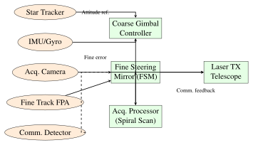

Chapter 16: Optical Satellite Communications¶
Chapter Objectives This chapter presents the physics, engineering, and operational aspects of free-space optical (FSO) communications for satellite systems. Topics include atmospheric propagation, adaptive optics, pointing-acquisition-tracking (PAT), optical link budgets, modulation and detection schemes, laser sources, inter-satellite links, and demonstrated missions from LLCD to TBIRD and the Starlink optical ISL network.
16.1 Introduction to Free-Space Optical Communications¶
Free-space optical (FSO) communications represents a paradigm shift in satellite data transmission, offering data rates of 1–1000 Gbps using narrow laser beams that are thousands of times more spectrum-efficient than conventional radio frequency (RF) links. The fundamental advantage of optical wavelengths (typically 780 nm, 1064 nm, or 1550 nm) over RF is the dramatically reduced beam divergence: for a 10 cm aperture at 1550 nm, the diffraction-limited half-angle divergence is \(\theta_{\rm div} \approx 19~\mu\)rad, compared to several degrees for a comparable RF aperture. This narrows the beam to deliver essentially all transmitted power within a small illuminated spot at the receiver, enabling extraordinary link efficiency.
FSO satellite links face challenges absent in terrestrial fiber: atmospheric turbulence introduces intensity fluctuations (scintillation) and beam wander; clouds block the link entirely; and the sub-microradian pointing accuracy requirement demands sophisticated acquisition and tracking systems. Despite these challenges, the success of missions including LLCD (2013), LCRD (2021), and TBIRD (2022) has validated FSO technology for operational satellite communications.
Key technical drivers motivating optical satellite links include:
-
Bandwidth: Optical carrier frequencies near \(2 \times 10^{14}\) Hz offer 200 THz of potential bandwidth, vastly exceeding the total allocated RF satellite spectrum.
-
Mass and power: A 1 Gbps optical terminal weighing 1–5 kg replaces an RF system at hundreds of kilograms; the narrow beam eliminates the need for large dish antennas.
-
Licensing-free operation: Optical wavelengths are unregulated by the ITU Radio Regulations, eliminating spectrum coordination delays.
-
Security: The narrow beam (\(< 1\) mrad) is inherently difficult to intercept without detection, providing physical-layer security that supplements encryption.
-
Interference immunity: Optical links are immune to RF interference and electronic warfare, providing resilience in contested environments.
16.2 FSO Link Fundamentals¶
16.2.1 Received Power and Link Equation¶
The received optical power in a space-to-space FSO link (above the atmosphere) is governed by a form analogous to the RF Friis transmission equation. For a transmitter with power \(P_t\), transmit aperture diameter \(D_t\), receive aperture diameter \(D_r\), link distance \(d\), and wavelength \(\lambda\), the received power is:
where \(\eta_t\) and \(\eta_r\) are transmit and receive optics efficiency (typically 0.7–0.9 each), and \(L_{\rm point}\) is the pointing loss factor. This expression assumes diffraction-limited operation of both apertures. The geometric loss (free-space path loss) dominates for space-to-space links, scaling as \(1/d^2\), identical to RF free-space loss but with the beam diffraction efficiency factor \((\lambda/D)^2\) replacing the RF wavelength factor.
The transmit telescope gain relative to an isotropic radiator is:
and the half-angle diffraction-limited beam divergence (to the \(1/e^2\) intensity radius) is:
For a 10 cm aperture at 1550 nm, \(\theta_{\rm div} \approx 37.8~\mu\)rad \((7.8~\text{arcsec})\).
16.2.2 Atmospheric Transmission¶
For ground-to-space links passing through the atmosphere, the Beer-Lambert law gives the atmospheric transmission at zenith angle \(\zeta\):
where \(\sigma_{\rm ext}(\lambda)\) is the wavelength-dependent extinction coefficient (sum of absorption and scattering), \(L_{\rm eff}\) is the effective atmospheric path length, and \(\tau(\lambda)\) is the vertical optical depth. At 1550 nm in clear sky at zenith, \(\tau \approx 0.05\), giving \(T_{\rm atm} \approx 0.95\). Absorption bands at 940 nm, 1140 nm, and 1380 nm must be avoided; the 1550 nm window benefits from minimal absorption by water vapor and \(\rm O_2\).
16.3 Atmospheric Effects¶
16.3.1 Atmospheric Turbulence¶
Turbulent mixing of air masses with different temperatures creates refractive index fluctuations \(n(\mathbf{r},t) = n_0 + n_1(\mathbf{r},t)\), where \(n_1 \ll n_0 \approx 1\). These fluctuations distort the optical wavefront, causing beam spreading, beam wander, and intensity scintillation at the receiver.
The strength of turbulence is characterized by the refractive index structure constant \(C_n^2\) (units of m\(^{-2/3}\)), which ranges from \(10^{-17}\) m\(^{-2/3}\) (weak, high altitude) to \(10^{-13}\) m\(^{-2/3}\) (strong, near ground). For a horizontal path of length \(L\) at constant turbulence strength, the Rytov variance (log-intensity variance for a plane wave) is:
where \(k = 2\pi/\lambda\) is the optical wavenumber. The turbulence regime is classified as:
-
Weak: \(\sigma_R^2 < 0.3\) — perturbative treatment valid, scintillation index \(\sigma_I^2 \approx \sigma_R^2\).
-
Moderate: \(0.3 < \sigma_R^2 < 5\) — multiple scattering effects, saturation begins.
-
Strong: \(\sigma_R^2 > 5\) — saturation regime, \(\sigma_I^2 \to 1\) (Rayleigh distribution).
For a vertical path from ground to a LEO satellite at 500 km, the integrated \(C_n^2\) path (Kolmogorov model) gives \(\sigma_R^2 \approx 0.1\)–\(0.5\) at 1550 nm for typical mid-latitude sites, placing most ground-to-space links in the weak-to-moderate turbulence regime.
16.3.2 Coherence Parameters¶
The Fried parameter \(r_0\) characterizes the spatial coherence of the wavefront:
Typical values: \(r_0 = 2\)–\(20\) cm at visible wavelengths at good astronomical sites (Mauna Kea, La Palma). Larger apertures (\(D > r_0\)) collect more power but with distorted wavefronts, requiring adaptive optics for coherent detection.
The coherence time \(\tau_0 = r_0 / \bar{v}\), where \(\bar{v}\) is the effective wind velocity, characterizes how rapidly the wavefront changes. Typical values \(\tau_0 = 1\)–\(10\) ms impose requirements on the adaptive optics bandwidth.
16.3.3 Cloud Blockage¶
Clouds completely block optical links, with blockage probability varying strongly with geographic location and season. Good astronomical sites (high altitude, subtropical, or polar): 5–20% cloud blockage annually. Poor mid-latitude sites: 40–60%. Site diversity (two or more ground stations separated by 100–200 km) reduces joint outage probability to the product of individual probabilities (assuming statistical independence of cloud cover at separated sites).
16.4 Adaptive Optics¶
Adaptive optics (AO) systems measure and correct atmospheric wavefront distortions in real time, enabling diffraction-limited performance with large-aperture ground telescopes despite turbulence.
16.4.1 Shack-Hartmann Wavefront Sensor¶
The Shack-Hartmann wavefront sensor (SHWFS) divides the incoming wavefront into \(N_{\rm sub} \times N_{\rm sub}\) subapertures using a lenslet array. Each lenslet focuses light from its subaperture onto a CCD detector, and the centroid displacement of the focal spot relative to the reference position is proportional to the local wavefront slope:
where \(d_{\rm sub}\) is the subaperture diameter and \(\phi\) is the wavefront phase. The collection of slope measurements \(\mathbf{s}\) is related to the actuator commands \(\mathbf{u}\) via the interaction matrix \(\mathbf{G}\): \(\mathbf{s} = \mathbf{G}\mathbf{u}\), inverted to give \(\mathbf{u} = \mathbf{G}^+\mathbf{s}\) (pseudoinverse).
16.4.2 Deformable Mirror¶
The deformable mirror (DM) is controlled by \(N_{\rm act}\) piezoelectric, electrostatic, or MEMS actuators. Each actuator deforms the mirror surface according to an influence function \(F_i(\mathbf{r})\) such that the corrected surface is:
Commercial DMs for FSO: Boston Micromachines Multi-DM (140 actuators, \(\pm3.5~\mu\)m stroke, MEMS-based), ALPAO DM97 (97 voice-coil actuators, \(> 80~\mu\)m stroke). Closed-loop AO bandwidth of \(> 100\) Hz is required to track the evolving wavefront within the coherence time \(\tau_0\).
16.4.3 Strehl Ratio and Performance Metric¶
The Strehl ratio \(S\) quantifies AO performance as the ratio of the actual on-axis intensity to the diffraction-limited (unaberrated) intensity:
where \(\sigma_\phi\) is the rms residual wavefront error after AO correction. The Maréchal approximation, valid for \(\sigma_\phi < \lambda/14\), gives:
A well-corrected AO system achieves \(S > 0.8\) (Strehl criterion for “diffraction-limited”), corresponding to \(\sigma_\phi < \lambda/14\) rms. Tip-tilt correction alone (second-order AO) recovers \(\sim 70\)% of the Strehl, while higher-order correction (\(> 100\) modes) is needed for high \(D/r_0\) ratios.
16.5 Pointing, Acquisition, and Tracking¶
Successful establishment of an FSO link requires three phases: acquisition (finding the remote terminal), pointing (aligning the beam), and tracking (maintaining alignment during relative motion). The PAT system is often the most technically challenging subsystem of an optical communication terminal.
16.5.1 PAT System Architecture¶

16.5.2 Pointing Loss Budget¶
The total pointing error \(\sigma_\theta\) consists of contributions from platform jitter (mechanical vibrations, thermal gradients), residual tracking error (finite control bandwidth), and thermal structural drift. The pointing-induced power loss is:
For a beam divergence \(\theta_{\rm div} = 40~\mu\)rad and pointing error \(\sigma_\theta = 1~\mu\)rad, the pointing loss is \(L_{\rm point} = \exp(-8/1600) \approx -0.022\) dB, negligible. For \(\sigma_\theta = 10~\mu\)rad with the same divergence, the loss rises to 2.2 dB.
The TBIRD terminal (NASA, 2022) demonstrated \(< 1~\mu\)rad pointing accuracy for a 10 cm aperture on a LEO satellite, achieving 200 Gbps.
16.5.3 Acquisition Scan Patterns¶
During acquisition, the pointing direction of one terminal is uncertain within an uncertainty cone of half-angle \(\sigma_{\rm unc}\) (typically 1–10 mrad from attitude reference uncertainty). A spiral scan pattern systematically covers the uncertainty area:
where \(\omega_s\) and \(v_s\) are the angular velocity and radial velocity. The acquisition time is bounded by \(T_{\rm acq} \leq \pi \sigma_{\rm unc}^2 / (\theta_{\rm div} \cdot v_s)\). Track loop bandwidth: 1–10 kHz, providing rejection of platform vibrations up to the loop bandwidth with \(> 20\) dB attenuation.
16.6 Optical Link Budget¶
16.6.1 Complete Link Equation¶
Combining all factors, the received power for a ground-to-space uplink is:
where \(G_t = \eta_t(\pi D_t/\lambda)^2\) is the transmit telescope gain, \(L_{\rm geom} = (\lambda/(4\pi d))^2\) is the free-space geometric loss, \(A_r = \pi(D_r/2)^2\) is the receive aperture area, \(L_{\rm AO}\) accounts for residual wavefront error and is equivalent to the Strehl ratio.
The signal-to-noise ratio for a direct-detection (photodiode) receiver in the quantum noise limited regime is:
where \(h\nu\) is the photon energy (\(h\nu = 1.28 \times 10^{-19}\) J at 1550 nm), \(B\) is the receiver electrical bandwidth, and \(\bar{n}_{\rm th}\) is the mean thermal photon number (negligible at 1550 nm, \(< 0.01\) at room temperature). For coherent detection (homodyne), the SNR is 3 dB higher for the same received power.
| Parameter | Value | Unit / dB |
|---|---|---|
| Transmit laser power \(P_t\) | 1.0 W | +30.0 dBm |
| Transmit aperture \(D_t\) | 10 cm | — |
| Transmit telescope gain \(G_t\) | \(\eta_t(\pi D_t/\lambda)^2\) | +108.1 dB |
| Transmit optics efficiency \(\eta_t\) | 0.80 | \(-\)0.97 dB |
| Free-space geometric loss \(L_{\rm geom}\) | \(({\lambda}/{4\pi d})^2\) | \(-\)283.9 dB |
| Atmospheric transmission (clear) | 0.85 | \(-\)0.71 dB |
| Pointing loss \(L_{\rm point}\) | \(e^{-8(1/40)^2}\) | \(-\)0.09 dB |
| Receive aperture area (1 m) | 0.785 m\(^2\) | +118.9 dBcm\(^2\) |
| Receive optics efficiency \(\eta_r\) | 0.80 | \(-\)0.97 dB |
| Received power \(P_r\) (clear sky) | \(\mathbf{-29.6}\) dBm | |
| Detector sensitivity (BER \(10^{-6}\), DPSK) | \(-\)43.0 dBm | |
| Link margin (clear sky) | \(\mathbf{+13.4}\) dB | |
| Atmospheric transmission (thin cloud) | 0.30 | \(-\)5.2 dB |
| Link margin (thin cloud) | \(\mathbf{+8.2}\) dB |
16.7 Modulation and Detection¶
16.7.1 On-Off Keying (OOK)¶
OOK is the simplest optical modulation: the laser is switched on for “1” and off (or dimmed) for “0.” The spectral efficiency is 1 b/s/Hz (ideal), and the bit error rate for direct detection with intensity noise is:
where \(\bar{n}_s\) is the mean signal photon count per bit for a “1” symbol.
16.7.2 Pulse Position Modulation (PPM)¶
\(M\)-ary PPM encodes \(\log_2 M\) bits by placing a single optical pulse in one of \(M\) time slots within a frame. The slot error probability for a Poisson detector is:
where \(\bar{K}_s\) is the mean signal photon count per symbol. PPM is used in deep-space optical links (LLCD: 16-PPM) where the received photon rate is extremely low (\(< 1\) photon/bit at lunar distances) and power efficiency is paramount.
16.7.3 Differential Phase-Shift Keying (DPSK)¶
DPSK encodes data in the phase difference between consecutive pulses rather than the absolute phase, eliminating the need for a coherent phase reference. DPSK achieves approximately 3 dB better receiver sensitivity than OOK at the same bit error rate. Using a Mach-Zehnder delay interferometer (MZDI) as the demodulator, the differential phase is converted to intensity difference before photodetection.
16.7.4 Coherent QPSK¶
Coherent detection with a local oscillator (LO) laser is shot-noise limited and achieves the highest possible spectral efficiency. For QPSK coherent detection:
where \(\eta_{\rm opt}\) is the quantum efficiency of the receiver. TBIRD (2022) achieved 200 Gbps using coherent QPSK at 1550 nm with a 10 cm aperture in LEO.
16.7.5 Photon-Counting Detection¶
For very low light levels (deep space, or photon-efficient PPM links), photon-counting detectors offer the highest sensitivity:
Avalanche Photodiode (APD): The APD achieves internal gain \(M\) through impact ionization. The excess noise factor is:
where \(k\) is the ionization ratio (\(k \approx 0.02\) for Si, \(k \approx 0.4\) for InGaAs). Si APDs at 800 nm achieve \(M \approx 100\) with \(F \approx 3\) dB excess noise; InGaAs APDs at 1550 nm achieve \(M \approx 10\)–\(30\) with \(F \approx 5\)–8 dB.
Superconducting Nanowire Single-Photon Detector (SNSPD): Cryogenic detectors (operating at 0.8–3 K) using a superconducting NbN or WSi nanowire. Performance: detection efficiency \(> 93\)% at 1550 nm, timing jitter \(< 50\) ps, dark count rate \(< 1\) cps, maximum count rate \(> 100\) Mcps. SNSPDs are used in LLCD and LCRD ground terminals for single-photon-level sensitivity.
16.8 Laser Sources¶
16.8.1 Wavelength Selection¶
The choice of operating wavelength involves tradeoffs among atmospheric transmission, detector technology, laser technology, and eye safety regulations:
-
1550 nm: Eye-safe (cornea and lens absorb, retina protected); EDFA amplifiers provide 30 dB gain with \(< 5\) dB noise figure; telecom-grade components available; InGaAs detectors and coherent receivers well-developed.
-
1064 nm: High-power Nd:YAG and Yb-fiber lasers; Si APDs have higher quantum efficiency than at 1550 nm; shorter wavelength gives smaller diffraction divergence for given aperture, reducing geometric loss.
-
780 nm / 850 nm: Si APD peak sensitivity; Rb atomic transition at 780 nm can serve as absolute frequency reference for clock applications; higher Rayleigh scattering limits low-elevation-angle links.
16.8.2 Laser Types¶
Nd:YAG DPSS (1064 nm): Diode-pumped solid-state Nd:YAG lasers provide output powers of 0.5–10 W with high beam quality (\(M^2 < 1.1\)) and good frequency stability. Used in early MLCD and LLCD demonstrations.
Er-doped Fiber Amplifier (EDFA, 1530–1570 nm): A master oscillator power amplifier (MOPA) architecture combines a narrow-linewidth distributed feedback (DFB) laser seed with an EDFA booster to produce 0.5–2 W of amplified output. EDFA gain bandwidth covers the entire C-band; noise figure 4–5 dB typical. The MOPA architecture allows the modulation to be applied to the low-power seed laser, then amplified without distortion.
Semiconductor Laser Diode: Single-mode DFB lasers at 780 nm or 850 nm offer compactness and direct modulation at rates up to 40 GHz but are limited to \(\leq 100\) mW single-mode power; arrays can reach watts. InGaAsP/InP DFB lasers at 1310 nm or 1550 nm are the workhorses of coherent optical communications.
For coherent detection, the laser linewidth must satisfy \(\Delta\nu_{\rm LW} \ll B_{\rm symbol}\) to prevent phase noise from dominating receiver performance. For QPSK at 10 Gbaud, the combined transmitter-LO linewidth must be \(< 1\) MHz; for 64-QAM, \(< 100\) kHz. ECL (external cavity laser) and DFB+fiber Bragg grating lasers achieve linewidths of 1–100 kHz.
16.9 Demonstrated Missions¶
| Mission | Year | Rate | \(\lambda\) (nm) | Distance | Aperture | Org. |
|---|---|---|---|---|---|---|
| LLCD (LADEE) | 2013 | 622 Mbps | 1550 | 385,000 km (Moon) | 15 cm SC, 1 m GND | NASA |
| LCRD | 2021 | 1.2 Gbps | 1550 | 36,000 km (GEO) | 10 cm SC, 1 m GND | NASA |
| TBIRD | 2022 | 200 Gbps | 1550 | 550 km (LEO) | 10 cm SC, 1 m GND | NASA |
| EDRS SpaceDataHighway | 2016 | 1.8 Gbps | 1064 | 45,000 km (ISL) | 13.5 cm LCT | ESA/Airbus |
| Micius QKD | 2017 | — | 800 | 1200 km (sat-GND) | 30 cm SC, 1.2 m GND | CNSA |
| Starlink ISL | 2021 | \(\sim\)100 Gbps | 1550 | \(<\) 5000 km (ISL) | \(\sim\)5 cm | SpaceX |
| OPALS (ISS) | 2014 | 50 Mbps | 1550 | 400 km (ISS) | 10 cm SC | NASA/JPL |
16.9.1 LLCD: Lunar Laser Communication Demonstration¶
LLCD (2013) flew aboard NASA’s LADEE spacecraft in lunar orbit, demonstrating optical communications from the Moon for the first time. Key achievements:
-
622 Mbps downlink: DPSK modulation, 0.5 W transmitted, 15 cm telescope on spacecraft.
-
20 Mbps uplink: From three ground stations (White Sands NM, Tenerife Spain, Table Mountain CA) with 1 m receive apertures.
-
Error-free reception: At lunar distance (385,000 km), a factor of \(\sim\!5\times\) improvement over the best RF link from lunar distance demonstrated to that point.
-
PPM format: 16-slot PPM with rate-1/2 LDPC coding for power efficiency.
16.9.2 LCRD: Laser Communications Relay Demonstration¶
LCRD (launched December 2021 on STPSat-6 into GEO) is NASA’s first two-way optical relay demonstration. Operating at 1.2 Gbps bidirectional, LCRD relays data between two ground stations at White Sands and Table Mountain, demonstrating the relay concept for future TDRSS optical replacement. LCRD remains operational as of 2025.
16.9.3 TBIRD: TeraByte InfraRed Delivery¶
TBIRD (2022) on the PathFinder Technology Demonstrator-3 (PTD-3) CubeSat in LEO achieved 200 Gbps—the highest data rate ever demonstrated in a space optical communication link—using:
-
Coherent QPSK modulation at 200 Gbaud equivalent
-
10 cm aperture telescope on the 12U CubeSat
-
0.72 m ground telescope at White Sands Missile Range
-
Sub-microradian (\(< 1~\mu\)rad) pointing performance
-
1550 nm EDFA-based MOPA transmitter
The 200 Gbps rate enables transfer of terabytes of data per satellite pass, with implications for high-volume Earth observation data downlink.
16.9.4 EDRS Space Data Highway¶
The European Data Relay System (EDRS), operated by Airbus and ESA, provides a commercial optical ISL service between GEO relay satellites (EDRS-A at 9\(^\circ\)E, EDRS-C at 3\(^\circ\)E) and LEO satellites including Copernicus Sentinel-1 and Sentinel-2. Each ISL uses the Tesat Laser Communication Terminal (LCT):
-
1.8 Gbps full-duplex at 1064 nm (BPSK coherent)
-
13.5 cm Cassegrain telescope
-
Acquisition time \(< 20\) s from cold start
-
Pointing accuracy \(< 0.3~\mu\)rad RMS
-
Maximum ISL range 45,000 km (LEO-to-GEO)
16.10 Inter-Satellite Optical Links¶
16.10.1 ISL Geometry and Link Parameters¶
Inter-satellite links (ISL) eliminate atmospheric effects, operating in vacuum where the link is purely geometric. Key ISL geometries:
-
LEO-LEO (in-plane): Separation 1000–5000 km; relative velocity \(< 0.5\) km/s (same orbital plane); Doppler shift \(< 1\) GHz; high-rate links (100 Gbps) feasible with \(< 5\) cm apertures.
-
LEO-LEO (cross-plane): High relative velocity at low latitudes causes link disruption; Starlink disables cross-plane links at latitudes \(> 65^\circ\).
-
GEO-GEO: Separation up to 70,000 km (full-ring GEO); Doppler nearly zero; large geometric loss requires larger apertures (\(\geq 20\) cm).
-
LEO-GEO: Separation 35,000–45,000 km; significant relative motion; EDRS architecture uses GEO relay to store and forward from LEO to ground.
16.10.2 Starlink Optical ISL¶
SpaceX Starlink Generation 2 satellites incorporate four optical ISL terminals per satellite: two in-plane (fore and aft) and two cross-plane (left and right). The ISL network enables routing of user traffic through the satellite mesh without requiring ground relay stations, substantially reducing latency for transoceanic routes.
Key parameters (estimated from available disclosures):
-
Wavelength: 1550 nm (eye-safe, telecom-compatible)
-
Data rate: \(\sim 100\) Gbps per ISL link
-
Aperture: \(\sim 5\) cm (consistent with Tesat LCT heritage)
-
Network topology: Mesh routing using modified BGP-like protocol
-
Latency advantage: FSO propagation at \(c = 3\times10^8\) m/s vs. fiber at \(c/n_{\rm fiber} \approx 2\times10^8\) m/s, giving 33% lower propagation delay.
The latency advantage for a transoceanic route (London to New York, 5570 km great circle) via Starlink ISL is approximately:
(accounting for the longer ISL path through LEO orbits at \(\sim 550\) km altitude).
16.11 Ground Networks and Site Diversity¶
16.11.1 Ground Terminal Design¶
Optical ground station (OGS) telescopes for satellite communication use designs adapted from astronomical telescope mounts with additions for optical communications:
-
Aperture: 0.4–4 m diameter; 1 m is typical for operational stations; larger apertures reduce terminal count needed for the same link availability.
-
Mount: Alt-azimuth tracking with slew rates \(> 10^\circ\)/s and tracking accuracy \(< 1~\mu\)rad with additional fine steering mirror.
-
Vibration isolation: Active and passive isolation to suppress building HVAC and traffic vibrations to \(< 1~\mu\)rad pointing residual.
-
Dome/enclosure: Fast-opening shutters (\(< 5\) s) for responsive tasking; active ventilation to minimize dome seeing (local turbulence from temperature gradients).
16.11.2 Site Diversity and Cloud Outage Statistics¶
Cloud outage statistics at candidate optical ground station sites:
| Site | Elevation (m) | Annual Outage (%) | Summer (%) | Winter (%) |
|---|---|---|---|---|
| Mauna Kea, Hawaii | 4205 | 8 | 5 | 12 |
| La Palma, Canary Is. | 2396 | 12 | 7 | 18 |
| Atacama, Chile | 5000 | 5 | 3 | 8 |
| White Sands, NM | 1200 | 22 | 30 | 15 |
| Tenerife OGS (ESA) | 2393 | 15 | 10 | 22 |
| Singapore | 10 | 55 | 52 | 58 |
| Central Europe (avg) | 300 | 62 | 55 | 70 |
For a two-site diversity network with outage probabilities \(P_1\) and \(P_2\), the joint outage probability (both sites blocked simultaneously) is:
where \(\rho_{12}\) is the temporal cross-correlation between outage events (0 for independent, 1 for fully correlated). For Mauna Kea and La Palma (hemispheric separation): joint outage \(\approx 8\% \times 12\% = 0.96\%\), achieving \(> 99\%\) availability, meeting most service level agreements.
16.11.3 UAV and High-Altitude Platform Relay¶
For locations with persistent cloud cover, unmanned aerial vehicle (UAV) relay platforms or high-altitude pseudo-satellites (HAPS) at 20 km altitude (above 95% of cloud cover) can serve as optical relay nodes, converting between FSO and ground-level RF or fiber links. Solar-powered HAPS (Airbus Zephyr, Boeing PHASA-35) with 24-hour endurance at 20 km can position above cloud systems for days at a time, providing FSO connectivity to otherwise inaccessible ground networks.
Optical Link Design Guidelines Key rules of thumb for optical satellite link design:
-
Beam divergence: \(\theta_{\rm div} = 2.44\,\lambda/D_t\) (Airy disk first null)
-
Pointing accuracy: \(\sigma_\theta < \theta_{\rm div}/10\) for \(< 0.5\) dB pointing loss
-
Site diversity: Two sites \(> 200\) km apart reduces cloud outage from 40% to \(< 4\%\)
-
Detector technology: SNSPD for \(< 1\) photon/bit sensitivity; APD for intermediate; PIN for \(> 1000\) photons/bit
-
1550 nm is the preferred wavelength for satellite-to-ground links (eye-safe, EDFA-compatible, mature component ecosystem)
Summary¶
Optical satellite communications has advanced from theoretical proposal to operational infrastructure in the decade following LLCD’s 2013 lunar demonstration. The 200 Gbps achievement of TBIRD (2022) marks a 300-fold increase over LLCD’s 622 Mbps in just nine years. The key enabling technologies—coherent modulation, EDFA power amplifiers, fast PAT systems achieving sub-microradian pointing, and adaptive optics for ground terminals—are sufficiently mature for operational deployment. The Starlink optical ISL network and EDRS Space Data Highway represent the first commercial-scale deployments. The fundamental advantages of FSO—orders of magnitude more bandwidth than RF, mass and power efficiency, and licensing-free operation—ensure that optical communications will play an increasingly central role in future satellite constellations, particularly for high-throughput broadband, inter-satellite routing, and deep-space missions.